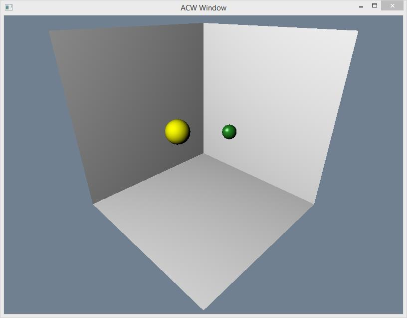
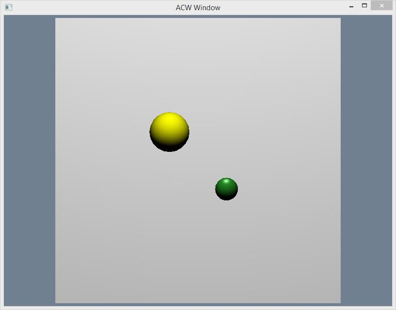
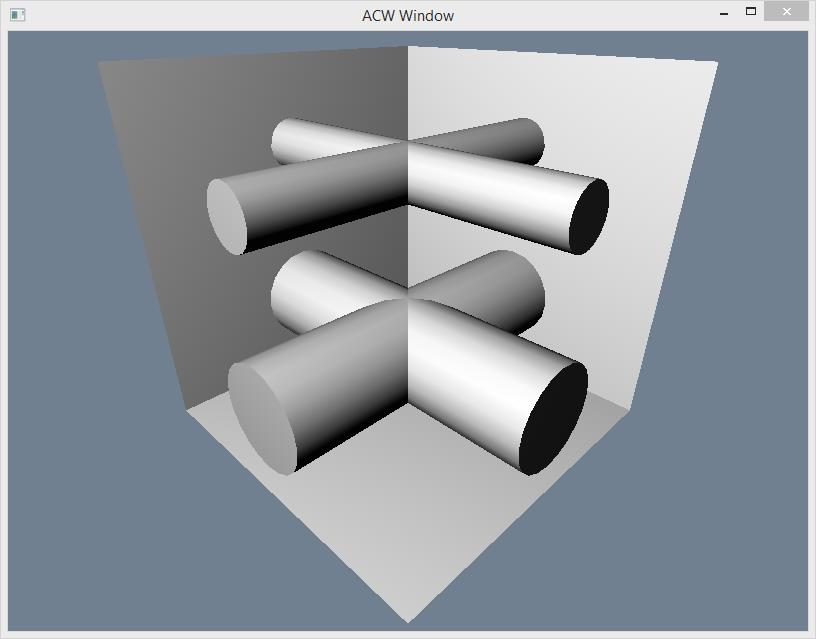
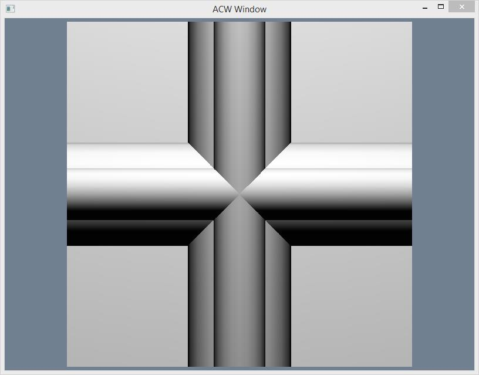
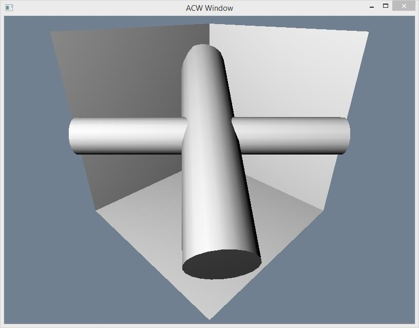
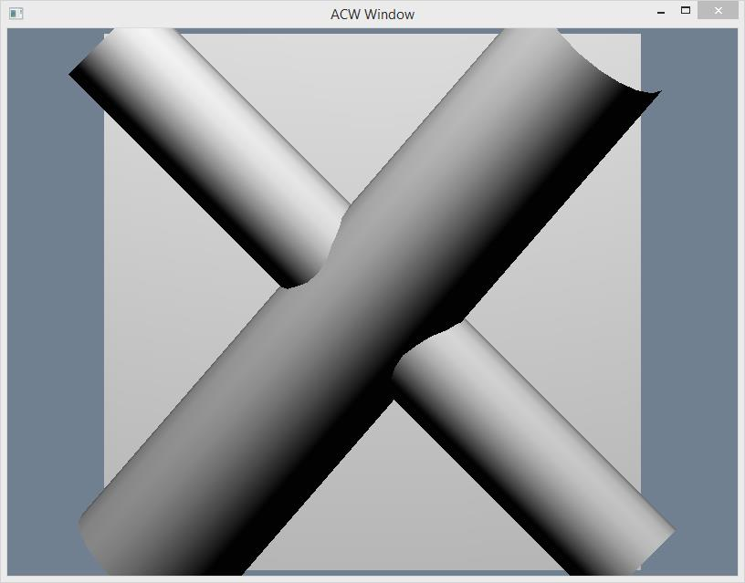
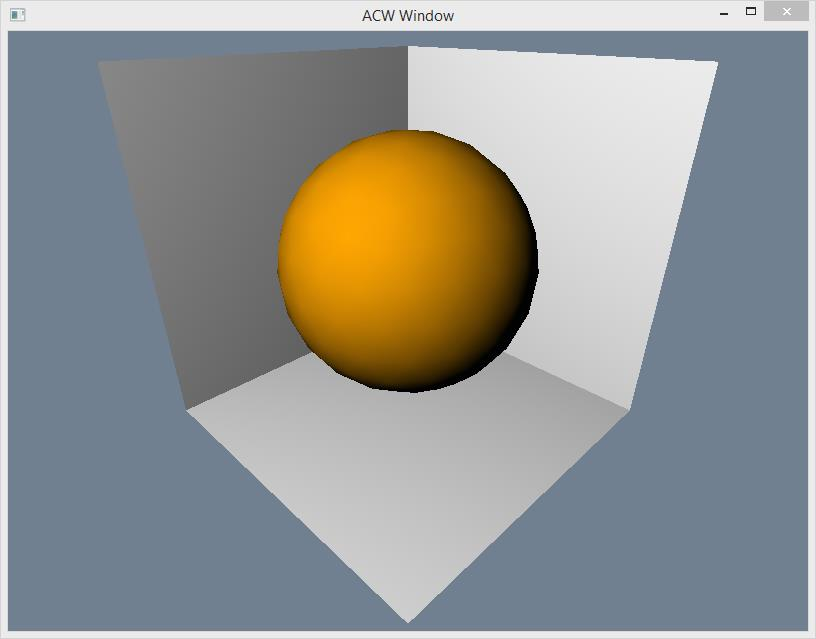
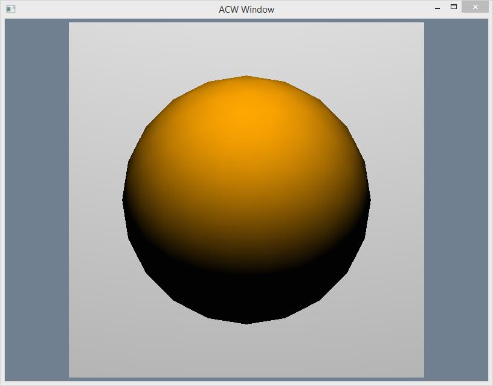

The goal of the per student data for this assessment is to give you the opportunity to collaborate with your peers with a reduced risk of plagiarism. This does not mean you can copy code from another student, but hopefully you can learn from each others code and apply what you have learnt to your own solution.
For your own records you should try to commit your work to SVN whenever a new piece of functionality is completed, with an appropriate message. To help you maintain focus you might want to write an ordered list of the necessary tasks you will need to complete. As you complete each task you should commit your work with a description of the task you have just completed.
This assessment is described as a series of cubes. Each cube should have a dimension of 100 cm. Pictures are for illustration only. There may be slight changes between the data you have been given and the pictures shown.
As well as using this document, you should also refer to the ACW specification that is published at the module site on sharepoint.
The purpose of the emitter box is to add balls into the column. It should add balls randomly at a rate that is fast enough to produce collisions between balls as they fall down the column and bounce off of cylinders etc. The emitter box should produce 2 different types of balls The first type of ball should have a radius of 4cm and a density of 0.001 kg per centimetre cubed and should be a shiny ForestGreen colour. The second type of ball should have a radius of 7cm and a density of 0.0012 kg per metre cubed and should be a matt Yellow colour. Please see the picture.
You should have two cylinders with radius of 15cm and two cylinders with a radius of 7.5cm. Both pairs should be arranged at right angles to one another forming two crosses. The smaller pair should be raised 25cm higher than the centre of the box, the larger pair should be dropped to 25cm below the centre of the box. Please see the picture.
You should have one cylinder of radius 10cm and another of radius 15cm. Each cylinder should be rotated 45 degrees in the vertical axis. One cylinder should be rotated clockwise and the other anticlockwise. One cylinder should also be rotated by 30 degrees in its orthogonal horizontal axis. Please see the picture.
Your sphere of doom should have a radius of 35 and should be coloured Orange
This specification is intended as guidance. You should add textures, lighting etc as you see fit. Please refer to the full specification on the sharepoint site.
If you have any questions about your specification please do not hesitate to email Simon at S.Grey@hull.ac.uk